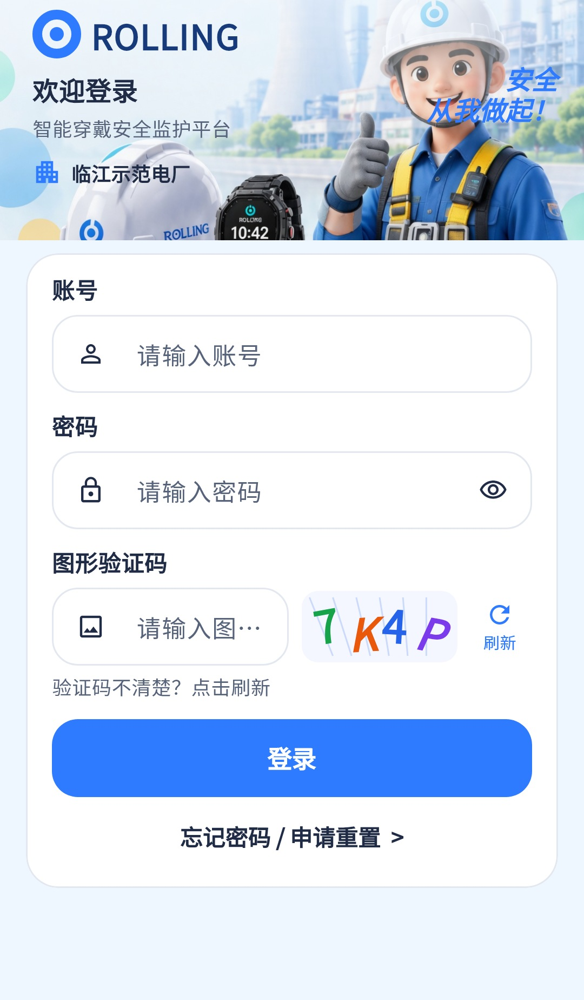

核心登录已有代码，视觉部分一致；验证码降级不能视为服务端校验完成。
相同 · 已有基础
同源登录插画、ROLLING、账号密码、图形验证码、登录和找回入口均存在。
不同 · UI与场景
当前头图较矮，标题16而非27；输入框较高、带图标，刷新另占一列；缺授权账号说明和底部品牌文案。
01 / 先看 UI
两图显示宽度统一；设计390px与当前360逻辑宽的画布不同。各图可独立滚动到底，点击“原图”放大。


本报告补采最新登录/找回组件，02已改为独立页，申请服务未接入。
02 / 逐项核对功能与小交互
入口：启动应用 · 当前形态：页面
| 编号 | 部位 | 设计要求 | 当前UI | 功能结论 | 下一步 |
|---|---|---|---|---|---|
| 01-01 | 顶部 | 欢迎标题和平台说明、宣传语 | 标题缩小，另有硬编码“临江示范电厂”和“安全从我做起” | 部分：登录前厂站只是固定文案 | UI先统一标题、头图裁切和文案，固定厂站不得误示为已授权 |
| 01-02 | 表单 | 账号输入 | 已有账号图标和输入框 | 已有代码：必填、trim、自动填充、忙时禁用 | 保留校验和键盘下一项 |
| 01-03 | 表单 | 密码及眼睛开关 | 已有密码框和可见性图标 | 已有代码：必填、显隐切换，登录后清空密码 | 对齐控件比例，验证长密码不截断 |
| 01-04 | 验证码 | 图形码、输入、刷新 | 已有彩色码和独立刷新按钮 | 部分：请求/captchaImage；异常会生成本地码，本地码不等于后端验证码 | 分别验证后端开启、关闭、请求失败和图片解码失败 |
| 01-05 | 提交 | 登录及等待 | 蓝色大按钮已有，圆角和色值不同 | 已有代码：POST /login后GET /me，忙时防重按，失败提示 | UI对齐后验证错密、过期、无厂站、多厂站 |
| 01-06 | 键盘 | 输入时能看到提交 | 设计未给键盘态 | 已有代码：键盘打开改用滚动表单 | 保留，测试小屏和大字体 |
| 01-07 | 问题入口 | 登录遇到问题 | 最新改为“忘记密码 / 申请重置” | 已有代码：Navigator打开02独立页面，不再是底部弹层 | 按最新入口验收返回与账号预填 |
| 01-08 | 底部 | 授权账号提示、品牌说明 | 当前未呈现对应两项 | 缺失：纯展示说明 | 补说明；“设计稿/示例数据”不照搬到生产登录页 |
| 01-09 | 会话恢复 | 登录后进入对应厂站 | 参考未单独展示 | 已有代码：安全存储凭据、重新验证会话、单厂站自动选定 | 保留现有额外能力，不强制重复选站 |
源码依据
auth_pages.dart:64,97,138,147,304,468；session.dart:132,172
链接为随报告保存的带行号快照；行号对应分析时源码。以函数和字段共同定位，不能将请求代码视为执行成功证据。